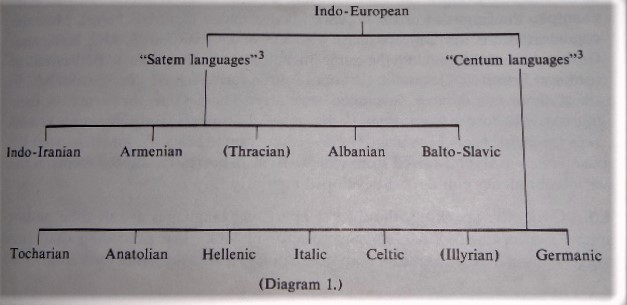
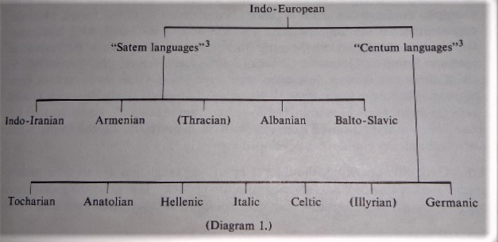
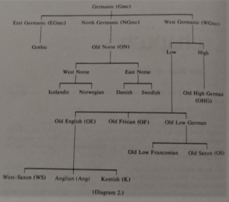

Gramar
Chapter 1
The Place of Old English
1.1. Scholars of the English language divide it for historical treatment into three stages:
Though These dates are set up partly for convenience, they nevertheless reflect a linguistic reality: by each of the boundary times, 1100 and 1500, the accumulation of gradual changes has become so considerable that in each case the language is clearly seen to have entered a new phase.
1.2. In its earliest phase one cannot even properly speak of the language as "English"; it was a collection of dialects brought over to Britain from the continent by Germanic invaders (the familiar Angles, Saxons, and Jutes2). These dialects were members of the Germanic (Gmc) branch of Indo-European (IE), the "family" to which most present European languages belong. The history of Old English cannot be fully understood unless its Gmc and IE connections are recognized. The accompanying Diagram 1 shows how the chief members of the IE family are related to one another:
 

Indo-European
- "Satem languages"3
- Indo-Iranian
- Armenian
- (Thracian)
- Albanian
- Balto-Slavic
- "Centum languages"3
- Tocharian
- Anatolian
- Hellenic
- Italic
- Celtic
- (Illyrian)
- Germanic
1
1.3 Since the Gmc branch is at the center of our present interest, it needs to be seen in fuller detail than the others (Diagram 2):

Germanic (Gmc)
- East Germanic (EGmc)
- Gothic
- North Germanic (NGmc)
- Old Norse (ON)
West Norse- Icelandic
- Norwegian
East Norse- Danish
- Swedish
- West Germanic (WGmc)
High- Old High German (OHG)
Low- Old English (OE)
West-Saxon (WS) Anglian (Ang) Kentish (K) Old Frisian (OF) Old Low German Old Low Franconian Old Saxon (OS)
Language Relationships
1.4. A word in any language which can be shown to have descended from the same source as one in another language is said to be cognate4 with it. For Example, the English word bear, carry, is descended from OE beran, which is cognate within the Gmc branch with OS and OHG beran, ON bera, and Gothic bairan, all having the same meaning. Scholars have hypothesized a common Primitive Germanic (PrGmc) source for or base *ber-5 from which all of these could have developed regularly. These Gmc forms are in turn cognate with forms from other IE branches: Latin ƒer- (Italic branch), Greek φερ- (Hellenic branch), Sanskrit bhar- (Indo-Iranian branch). And in turn an IE base *bher- is hypothesized from which all the historically attested forms in the various branches could have developed regularly.
1.5. Generally speaking, the farther apart two languages are in time and/or space, the less alike their cognate forms will look. The preceding diagrams suggest a much nearer relationship between OE and ON than between either of these languages and Latin, and a comparison of cognate forms in the three languages bears out this conclusion:
Lat. pecus, ON ƒé, OE ƒeoh (MnE fee)
Lat. quod, ON hvat, OE hwæt, (MnE what)
It is not often that a series of cognates from distantly related languages shows consistently similar forms, but consider the case of the humble mouse: OE mūs, Old Irish mús, Lat. mūs, Gr. μυς, Skt. mūš, all going back to an IE base *mūs-.
1.6. What we know of these complex interrelationships is the product of Comparative Indo-European Philology, a study which has occupied many of the greatest language scholars since the late eighteenth century. The plentiful remains preserved in OE were of considerable value in working out the details of the Gmc branch, hence also the larger scheme of IE. Old English, then, should be seen in its historical context, not only as the earliest phase of the present English language, but also as a member of the Gmc branch, and in relation to the other IE languages. (No systematic account of IE or of Gmc will be given in this book, however.)
1.7. Because of the paucity of documents surviving in the other OE dialects, all introductory study of the language is based on West Saxon (WS), the language of King Ælfred the Great (reigned 871-899) and of the writers who followed him until the Norman Conquest.6 Hence the texts in this book are WS, as is also the outline of grammar. Even a cursory inspection of the texts will show, however, that the usage and spelling of Ælfred's time differed considerably from those of the time of Ælfric (c955-c1012), about a century later. It is therefore necessary to distinguish between Early West Saxon (EWS), which is presented in the grammar and exemplified in texts 1, 2, 7, and 8, and Late West Saxon (LWS), which is exemplified in texts 11, 12, 13, and 14.
1.8. Though many changes have come into the language as OE has developed through ME to MnE, there has always been a high degree of continuity. The impression of strangeness which one receives at the first sight of an OE text is therefore somewhat misleading. It results largely from the presence of three unfamiliar symbols (þ, ð, and æ) and a number of unfamiliar clusters of otherwise familiar symbols (hw-, -cg, -sc, etc.). Most of these represent sounds still present in MnE though now spelled differently. For example, OE pæð is the familiar MnE path and sounded the same in OE as it does for most speakers today. As soon as these OE spellings become familiar the text will no longer have the look of a foreign language. One will begin to discover, in fact, that a great many OE words or word bases can be recognized by their MnE descendants.
Vocabulary
1.9. Vocabulary-counts of present day English have shown that, of the 1000 words most frequently used, about 83 percent are of OE origin. The proportion decreases rapidly in the less frequent thousands but remains throughout at about 30 percent despite the large number of non-English words that have been borrowed down through the centuries.7
1.10. Similar word-counts of the OE poetic vocabulary8 test this continuity in the other direction: of the 1000 most frequently used words, fully 55 percent have survived into recognizable form into MnE, and of the 100 most frequent, 76 percent have survived.
1.11. Analyzing only this last group, the one hundred or so most frequently used words in OE poetry, we find the following:
NOUNS | : | Surviving into MnE with little or no change in form or meaning (about 40 percent) | | god,
mann,
heoƒon,
eorðe,
weorold,
līƒ,
luƒu,
word,
weorc,
dæg,
hand,
cynn,
riht,
þanc,
engel, | God
man
heaven
earth
world
life
love
word
work
day
hand
kin
right
thank
angel |
| | | With greater change in form or meaning (about 30 percent) | | cyning,
mōd, (mood),
ƒolc, (folk),
mynd, (mind),
dōm, (doom),
ƒēond, (fiend),
ľsten, (fastness),
gāst, (ghost),
sōþ, (sooth),
burg, (borough), | king
courage
people
memory
judgement
enemy
fortification
spirit
truth
walled town |
| | | With no Standard English descendant (about 30 percent) | | dryhten,
hyge,
rīce,
þēod,
wuldor,
æðeling,
scop,
līc,
ƒeorh,
wer | lord,
mind, thought
dominion (cogn. Ger. Reich)
people, nation
glory
nobleman, prince
poet, singer
body, corpse
life
man (cogn. Lat. vir) |
PRONOUNS | : | Surviving with little change (about 80 percent) | | ic,
þū,
hē,
hit,
þæt,
hwā,
hwæt,
þis,
selƒ,
hwelc | I
thou
he
it
that
who
what
this
self, same
which |
| | Essentially different forms (about 20 percent) | | hēo,
sē,sēo
þēs, þēos | she
the
this |
VERBS | : | Surviving with little change of the base form or of meaning (about 35 percent) | | sittan,
sēcan,
healdan,
beran,
gieƒan,
cuman,
sēon,
bēon, wæs,
dōn, dyde, | sit
seek
hold
bear
give
come
see
be, was
do, did |
| | Surviving with considerable change (about 46 percent) | | wieldan, (wield),
habban, hæƒde,
mæg, meahte,
willan, wolde,
sculan, sceolde,
mōtan, mōste,
āgan,
secgan,
ƒaran, (fare),
cunnan, cūðe, (can, couth),
cweðan, cwæð, (quoth),
scieppan, (shape), | control
have, had
may, might
will, would
shall, should
be able, must
own
say
journey, travel
know
say, said
create |
| | Not surviving in Mn Standard English (about 18 percent) | | hātan, hātte, (ME hight),
weorðan, (ME worth),
beorgan,
witan, (wit),
munan, | be called
become
protect
know
remember
|
ADJECTIVES | : | Surviving with little change (about 57 percent) | | gōd,
wīd,
ľst,
hālig,
rīce,
ān, nān,
hēah, hīerra, hīehst,
micel, māra, mǣst, | good
wide
fast
holy
rich
one, none
high, -er, -est
much, more, most |
| | Surviving with considerable change (about 14 percent) | | swelc,
lēoƒ, (lieve), | such
beloved |
| | Not surviving in Mn Standard English (about 29 percent) | | ēce,
swīð,
æðele,
eƒt, | eternal
strong
noble (cogn. Ger. edel)
later |
ADVERBS | : | Surviving with little change (about 53 percent) | | tō,
eall
swā,
þǣr,
þanne,
nū,
ǣr,
wīde, | too
all
so, as
there
then
now
ere, before
widely |
| | Surviving with considerable change (about 27 percent) | | ēac, (eke),
swelce, (so-like),
ā, nā,
gelīc, | also
likewise
aye; never, not at all
like |
| | Not surviving in MnE | | ne,
þā,
swīðe, | not, neither
then, when
very, extremely |
PREPOSITIONS | : | Surviving with little change (about 82 percent) | | in,
on,
tō,
ƒor,
oƒer
under
æƒter,
æt,
þurh, | in, on
in, on
to, toward
for
over
under
after
at
through |
| | Surviving with changed meaning (about 9 percent) | | wið, (with), | against, opposite |
| | Not surviving in MnE | | mid,
| with, accompanying (cogn. Ger. mit) |
CONJUNCTIONS | : | Surviving with little change (about 75 percent) | | and, ond,
giƒ,
þēah, | and
if
though |
| | Not surviving | | ac, | but |
| | | | | |
1.12. In sum, it should be evident that there is a considerable degree of continuity in the core of the English vocabulary between OE times and the present. The enormous increase in the number of words has been due to addition rather than to wholesale replacement. In any present-day use of English the ancient native element is virtually inescapable and stays normally at the center. Almost all our MnE function-words (prepositions, conjunctions, articles) are from OE, as also the pronouns, numerals, and auxiliary verbs. Thus even if a writer today were to avoid the native nouns, verbs, adectives, and adverbs, using borrowed ones instead, the structural framework of most sentences would remain Anglo-Saxon. The first sentence of this paragraph (a random example which was not written to be used as such) would look like this if only the native words were retained and the others deleted:
In _____, it should be _____ that there is a _____ of _____ in the _____ of the English _____ between OE times and the _____.
More than 77 percent of the words in this sentence are native. The others are from Latin, directly or through French.
FOOTNOTES
1"Anglo-Saxon" is properly used of the people, their history, their literature, and frequently of their language. "Old English" specifically refers to the language, or to the literature written in it.
2So named by the Venerable Bede. Precisely who the "Jutes" were is not known; they can hardly have been from present Jutland. Scholarly opinion now inclines to identify them with the Frisians.
3IE languages have been broadly divided into centum [kɛntum] and satem [satɛm] (the Latin and the Avestan words for "one hundred"), indicating that a k sound found in languages of the first group was palatalized to an s or similar sound in languages of the second. This does not however reflect any basic split within the IE family. (For items in parentheses the evidence is not conclusive.)
4Lat co-gnatus "of common origin," sprung from the same stock. To be properly called cognate, two words must share a common ancestor. If one is the source of the other the relationship is different. For example, MnE garage is a loanword (borrowing) from MnFrench.
5Hypothetical or reconstructed forms are regularly preceded by an asterisk (*) to distinguish them from historically recorded or attested forms.
6West-Saxon was spoken in southwestern England (south of the Thames and west of Kent), Other dialects were Kentish (in Kent and adjoining parts of Sussex and Surry) and the Anglian dialects, which included Northumbrian (northward from the Humber to Scotland) and Mercian (between the Thames and the Humber - the large midland area). King Ælfred's capital was at Winchester (the "Casterbridge" of Thomas Hardy's novels).
7A. H. Roberts, A Statistical Analysis of American English, The Hague (Mouton) 1965, p. 37.
8J. F. Madden and F. P. Magoun, Jr., A Grouped Frequency Word-List of Anglo-Saxon Poetry, Dept. Of English, Harvard University, 1960.
_8
Chapter 2
Speech Sounds
2.1. In order to understand how OE was pronounced and how certain OE sounds changed before, during, and after the OE period, it is necessary to know the basic principles of phonetics, the science of speech sounds. How the sounds of speech are produced, what kinds there are, how they affect each other, how and why they change - these are the questions that need to be answered. The following brief account will touch only on features relevant to OE.
Speech Production
2.2. The sounds of speech are produced by air expelled from the lungs and modified variously by organs in the throat, the mouth passage, and the nose passage. The air leaves the lungs through the trachea or windpipe but produces no sounds before entering the larynx ("Adam's apple," the cartilaginous "box" at the top of the trachea). In the larynx the air meets two membranes (vocal cords, bands, or folds) which are attached along its inner sides from front to back. When stretched, these membranes draw together, closing the air passage or leaving only a slit between; when relaxed, they leave a wide opening. (This passage between the vocal cords is called the glottis.) The air coming from the lungs, when impeded by the vocal cords, causes them to vibrate, producing the sound called voice. But when the cords are relaxed and the glottis is open, the air is unimpeded and produces no vibration, hence no sound. All speech sounds are either voiced to some degree or voiceless. In the latter, the sound we hear is produced somewhere above the vocal cords (in the throat, mouth, or nasal passage).
Consonants and Vowels
2.3. When the air from the lungs enters the mouth passage (oral cavity) it may produce sounds of two main types: if it is shut off at some point and then suddenly released, an explosive or stop sound is produced - for example, [k]. However, if it encounters such a narrow aperture that, in forcing its way through, the friction becomes audible a spirant (or fricative) sound is produced - for example, [s]. Sounds made in either of these ways, or by impeding the breath in other ways, are consonants. Consonants accompanied by vocal cord vibration are voiced; others are voiceless.
2.4. When air from the lungs, after producing vibration in the larynx, encounters no stoppage or constriction in the throat or mouth but passes freely through, vowels are produced. The difference in the quality of vowels (for example the audible difference between [o] and [u]) is due to modifications made in the shape of the oral cavity, tongue position, and action of the lips as the breath passes through. (Pronounce the vowels of toe and too, noting the differences in each of these three factors.) Vowels, as their name implies, are voiced.
Classifying Consonants
2.5. Consonants are classified by three factors taken together:
- presence or absence of voice
- the organ or organs chiefly involved in producing them,
- their type - stop, spirant, etc.
Organs involved in producing the consonants, in addition to the larynx, are:
Usually the tongue articulates with one or more of these organs, either pressing against it or coming close enough to form a narrow aperture with it. The areas of the tongue which do this are the tip, the blade(behind the tip), and the back.
2.6. In addition to stops and spirants, already described, the class of consonants includes:
2.7. The accopanying Diagra 3 shows the consonants of OE and MnE. The sounds of these consonants are given in the symbols of the International Phonetic Association (IPA).1 A MnE keyword, with its relevant part printed in boldface type, is also supplied to indicate the value of the IPA symbol. The consonants are arranged from left to right on the diagram according to their relative position of articulation from the front to the back of the mouth. Most of the sounds indicated occur in both OE and MnE; however, EWS did not have [g] and [ȝ] and MnE does not have [ɣ] and [x].
Diagram 3

|
| Bilabial |
Labio-dental |
Inter-dental |
Alveolar |
Post-alveolar |
Palatall Velar |
| Voiced Stop |
[b] bine |
|
|
[d] dine |
|
[g] grind |
| Vcless Stop |
[p] pine |
|
|
[t] tine |
|
[k] kind |
| Voiced Spir |
| [v] vine |
[ð] thy |
[z] zing |
[ȝ] azure |
[ɣ] N Ger magen |
| Vcless Spir |
| [f] fine |
[θ] thigh |
[s] sing |
[ʃ] ashes |
[x] Ger machen |
| Voiced Affr |
|
|
|
[ʤ] gin |
| Vcless Affr |
|
|
|
[ʧ] chin |
| Nasal |
[m] mine |
|
|
[n] nine |
|
[ŋ] long |
| Sonorant |
|
|
|
[l] line |
| Sonorant |
|
|
|
[r] rye |
| Glide |
|
|
|
|
[j] yet |
[w] wine |
_____________________________________________________________________________
2.8. Any of the consonants may be designated or identified by naming its three characterizing features as they appear on the diagram. Thus, [p] is a voiceless bilabial stop; [n] is a (voiced) alveolar nasal, and so on. (When a feature is the same for a whole class of sounds it need not be mentioned - e.g., voice for nasals, sonorants, and glides.)
Exercise 1. Following the examples given for [p] and [n], write descriptions for the other consonants of Diagram 3.
FOOTNOTES
1Enclosing a symbol in square brackets indicates that it is being used phonetically, i.e., consistently and exclusively to represent a given sound. The phonetic alphabet of the IPA is premised on this one-to-one correspondence. Thus, in a phonetic transcription using the IPA alphabet, the symbol [f] will be used to represent the final consonant of all four words laugh, luff, lymph, aloof, where our English spelling has four separate ways of representing the same sound.
11
Chapter 3
Speech Sounds. Vowels
3.1. In the OE manuscripts (MSS), long vowels and diphthongs are sometimes marked with and acute accent (´); edited modern texts, the present one included, usually indicate etymologically long vowels with a macron (¯), leaving the short unmarked. Thus gōd, good, but God, God; wītan, to keep, but witan, to know; and so on. Scholars know which to mark or leave unmarked after comparisons made with cognate forms in other Gmc languages and from observing how these vowels later developed in ME and MnE. Another valuable source of evidence is OE poetry, where vowel length is often indicated by the meter (see pp. 274-288).
Classifying Vowels
3.2. Vowels may differ from one another in quantity (i.e. length), quality or both. They are classified as regards quality chiefly by three factors taken together: the degree of openness of the oral cavity, the position of the tongue, and the shape of the lips. In fuller detail:
- The cavity may be slightly open, half open, or wide open: the vowels produced are accordingly high, mid, or low (compare MnE beat, bait, bat).
- The tongue may be pushed forward, left at the center, or humped backward within the mouth: vowels are accordingly front, central, or back (compare MnE beat, but, boot).
- The lips may be more or less pouted or they may be left inactive: vowels are accordingly round or unround (compare MnE boot, beat).
the accompanying diagram 4 shows the vowels of OE.
Diagram 4

| ________ | | ____Front_______ | Central__________ | Back ________ |
| | | [i:] beat | | [u:] boot |
| High | | [y:] Ger kühn |
| | | [ɪ] bit | | [υ] put |
| | | [y] Ger küss |
| | | _________________________________________________ |
| | | [e:] bait | | [o:] boat |
| Mid | | | [ə] but |
| | | [ɛ] bet | | [ɔ] Brit pot |
| | | _________________________________________________ |
| | | [æ:] S-SW US buy | | [α:] baah |
| Low | |
| | | [æ] bat | [a] Scot man | [α] US pot |
__________________________________________________________
Note that within each of the two pairs [æ:] and [æ] and [y:] and [y] the difference is quantitative, whereas within the other pairs there is a qualitative difference as well.
3.3. Any of these vowels may be designated (described) by its three characterizing features and by whether it is long or short. (In IPA the diacritic [:] following a symbol indicates that it is long.) For example, [α:] is a low back unround long vowel; [y] is a high front round short vowel.
Exercise 1 Following the examples given for [α:] and [y], write designations for the other vowels of Diagram 4.
3.4. A diphthong (Gr di-, two + phthongos, sound) is made by starting in the position of one vowel and moving smoothly and rapidly to the position of another, the shift taking place within a single syllable. MnE has diphthongs in such words as bout [α + υ], bite [α + ɪ], boy [ɔ + ɪ]; the vowels in such a word as chaos do not form a diphthong, however. (The OE diphthongs are described in 4.15.)
Sound Change
3.5. To know the elements of phonetics makes it possible to understand all the regular sound-changes of OE, such as diphthongization, assimilation, palatalization, and others described in later chapters. The sounds of every language are constantly subject to change for several reasons. Though any normal human being can hear and produce a very large number of different sound-features, no language utilizes more than a fraction of those possible. The feature through which one sound is distinct from others similar to it will be accompanied by non-distinctive features which native speakers and hearers learn to ignore or to discount. For example, we recognize nasality as distinctive in the consonant phoneme1 /n/ because on its presence or absence depends the difference of meaning between pie and pine, or between sea and scene. But if nasality is added to vowels, as it is in some individuals' speech, it does not affect the meaning of what is said; we ignore it and notice only those features necessary to the distinctiveness of the linguistic signal (For example, [mæ̃n] said nasally means the same as [mæn] without nasality). Over the course of time, with many speakings and hearings, a formerly non-distinctive feature may become more prominent, or one that was sporadic or contingent may become more established. The former interrelation of sounds has been altered: there has been a sound-change.
3.6. Such changes are usually the result of the influence which sounds exert upon one another within the sequences of which words are built. It is well known that the [æ] in at is shorter than the [æ] in add - why? Because the vibration of the vocal cords in the first word must stop for voiceless t, whereas in the second vibrations of [æ] do not stop but continue into d, which is a voiced sound. The greater length of the [æ] in add is due simply to its envioronent. (As far as meaning is concerned, this difference of length is quite non-significant.)
3.7. Speech is a continuum. As sounds are spoken, they normally flow into each other with small adjustments that make articulation easier. By itself, [p] (a voiceless bilabial stop) would require an explosion to be heard, yet in context it is not always exploded. In the compound word hop-pole we do not have two explosions: the p of hop makes the bilabial closure and holds it for a moment; then the p of pole makes the explosion. Thus, in fact, two p's have been reduced to one lengthened [p:] which requires less complex articulation.
3.8. One of the the commonest sound-changes is assimilation, in which one sound or sound-feature becomes more like or similar to another near it. The past tense of have in OE is hæƒde (ƒ representing the sound [v]). By ME this has changed to hadde, the [v] becoming [d] by assimilation to the following [d].2 (As with hop-pole the double letter represents length, not two explosions.) During most of the ME period hadde remains disyllabic, but by early MnE it has become had and is now even further reduced to 'd in such condensed forms as he'd promised, they'd arrived. Such progressive simplification occurs gradually enough to not destroy the function of the linguistic signal. Many features of OE show the effects of assimilation; one special type, umlaut or mutation, has left interesting traces in MnE. (See Ch 11.)
3.9. Very important sound-changes result also from the feature calles stress, which is simply the differential physical force exerted in producing syllables. This feature typifies the Gmc branch of IE; it has been in operation throughout the history of English and continues in force today. Every English word of two or more syllables places considerably more stress on one syllable than on the other or others. At least three distinctive degrees of stress exist in OE: primary, secondary, and weak. In the word gūð-cyning, war-king, they are found rspectively in the first, second, and third syllables: ˊ ˋ ˣ.
3.10. Strong stress tends to preserve sounds: weak stress lays them open to change. A striking example of stress working in cooperation with other phonetic factors to simplify the linguistic signal is furnished by the history of our MnE word lord. It goes back to Prehistoric OE *hlāƒ-ward, loaf-guardian, i.e. the master of a household in his capacity as distributor of food. As seperate monosyllables, hlāƒ and ward (in WS weard) normally took primary stress. Joined together as a compound word, the second element had to have less stress than the first, thus ˊˋ. With a further reduction of stress to ˊˣ, further change ensued: between the voiced sounds represented by ā and w, the sound represented by ƒ became voiced: phonetically, [f] to [v]. This is a type of assimilation. Further, the rounded semivowel represented by w was simplified altogether out of existence but left a ghostly reminder of itself in the rounding of the second vowel from a to o. Thus by the time of our historical OE records, *hlāƒ-ward had become *hlāƒord, and its etymology was doubtless obscure to most OE speakers. In ME we find the word as loverd: now the voiceless hl- of OE3 has been voiced (perhaps through assimilation to the following vowel) as [l]; the unstressed vowel has lost rounding, hence o is now spelled e, which probably represents [ə].4 Finally, internal v, occuring in an unstable position between vowels, disappears; the vowel of the primary-stressed syllable is preserved, the vowel of the weak-stressed syllable is lost, and a monosyllable is the result: lord. Through a similar if less sweeping series of changes, PrehOE *hlāƒ-dige, bread-kneader, became MnE lady.
3.11. One of the most sweeping effects of the stress-differential in changing a language may be observed toward the end of the OE period. Strong stress remains on the base syllable of words; prefixes and suffixes accordingly become weaker by contrast and tend to be at first reduced, then entirely lost. Inflectional syllables, coming at the ends of words, are especially subject to this erosion; indeed, it is their widespread disappearance more than anything else which marks the boundary between OE and ME.
3.12. Sound changes are not of equal importance. Those which affect an entire category of sounds, or which even produce a realignment in the structure or system of the language, are obviously the more profound. Others may affect only a few words or may operate for a limited time then be overcome by countervailing forces. The final outcome of any sound-change is also greatly subject to such nonlinguistic factors as the prestige of one dialect over others (hence its spread at their expense) or serious dislocations in society because of war, plague, economic collapse, foreign influence. The language reflects the society: traditionalism fosters linguistic conservatism; social change fosters change in the language. Since it is probably true that English society has undergone more cultural change than any other in Western Europe, it is not surprising that the English language should have been less conservative than any other. Old English, richly varying in its dialects and everywhere reflecting the many changes and influenes it underwent during the six hundred years in which it was the vernacular language of England, may be seen as a microcosm of the whole English language - though ephasis will be placed, in this Grammar, on the relatively circumscribed and stable stage of EWS.
FOOTNOTES
1A phoneme is a minimal unit of distinctive sound-feature which contrasts structurally with all other phonemes in the same language or form of speech. Differences in meaning are signaled by this distinctiveness of the phoneme. Phonemic symbols are regularly put between virgules: /n/, etc. See further Appendix II.
2In fuller detail: [v] was already voiced, like [d]; its assimilation consisted in its partial spirant closure becoming full stop closure and its position of articulation moving from labio-dental to dental.
3See further below, Ch 4, footnote 11.
4The change of OE ā > ME o in the first syllable reflects the isolative change (i.e., one occuring without reference to an immediate phonetic envioronment) by which every OE ā became ME o (phonetically [α:] > [ɔ:]) - compare OE bāt, ME bote (MnE boat). Most of the changes hitherto exemplified in the development of *hlāƒ-ward have been combinative changes (i.e. those conditioned by an immediate phonetic environment).
16
Chapter 4
OE Spelling and Pronunciation
4.1. The growth of literacy and literary culture among the Anglo-Saxons was a consequence of their conversion to Christianity. The Latin alphabet, introduced by missionaries, displaced the Germanic ƒuþark (runic alphabet), which in any event had only been used for brief inscriptions of a magical, monumental, or practical nature and never for the transcription of extended texts. It was in the scriptoria of the early monasteries that writing was done on a large scale for the first time in Anglo-Saxon England. The monks were concerned first and foremost with the creation and transmission of Latin texts, which they had been taught to write by Irish monks. When they started writing their own vernacular language they naturally maintained the same correspondence between sound and symbol to which they were accustomed in writing Latin. As a consequence, OE spelling before Ælfred's reign, and to some extent after it, approached a phonetic rendering of the actual speech of various districts and periods.1 It is thanks to this situation, where regional or individual variations in pronunciation are directly reflected in writing, that scholars have been able to establish the dialect characteristics and the historical development of OE sounds.
4.2. A number of sounds existed in OE, however, for which the Roman alphabet did not provide since they were not present in the pronunciation of Latin. The missing letters were supplied in a number of ways. From the runic alphabet þ ("thorn") was borrowed and used to represent both interdental spirants: voiced [ð] as in thy and voiceless [θ] as in thigh. Another letter was late invented for the same sounds by "crossing" a d: ð ("eth"). These two letters, þ and ð, are virtual alternatives in OE writing.2
4.3. The other character borrowed from the runic alphabet is Ƿƿ ("wen" or "wynn"), used for the sound [w]. Most modern texts (including this one) substitute w for it to avoid confusion with p, which it closely resembles.
4.4. The Latin diphthong ae, written as a ligature, æ, is used for the simple vowel articulated somewhere between [a] and [ɛ], as in MnE bat. The runic name for this symbol is "ash", OE æsc.
4.5. Every letter written was intended to be pronounced - there were no "silent" letters.3 Doubling of a letter indicates prolongation in its pronunciation.4
Consonants
5 6
4.6. OE b, d, l, m, p, t, w, and x ([ks]) are pronounced as in MnE. Examples: bedd, bed; dol, dull, stupid; lamb, lamb; meolc, milk; pinn, pin; tacan, take; waru, ware; fyxe, vixen.
4.7. It is thought (with some differences of scholarly opinion) that r was trilled, rather than simply retroflex as in MnE. Examples: rāp, rope; byrig, city; fær, journey.
4.8. Three consonant symbols, f, s, and þ/ð, have dual values: they represent voiced sounds when they occur singly (not doubled) between voiced sounds (except when the first is a part of a prefix: e.g., the f in gefoh remains [f]). Everywhere else they represent voiceless sounds.
Examples:
4.9. Two letters, g and c, have dual values according to their environment: the original sounds were velar [ɣ,k], but in PrehOE those occurring with front vowels (dental to palatal region) were fronted; those occurring with back vowels (velar region) remained back. (These alternants, like the preceding, exemplify assimilation: this time the position of articulation changed to agree with that of environing sounds.)
Specifically, g is fronted to [j] when it comes:
- before long or short i, e, (̆̆ī̆, ē̆)7 and the diphthongs which begin with them: gif, if; gēar, year;
- between front vowels (̆̆ī, ē̆, ǣ̆): siges, of victory; leger, couch, lair;
- at the end of a syllable, following a front vowel: hīeg, hay; lægdon, (they) laid;
- when it had been followed in PrehOE by i or j:8 cīegan, to name, call; byrg, of (the) town.
4.10.
4.11.
4.12.
4.13.
4.14.
4.15.
4.16.
FOOTNOTES
1In the ninth century, however, largely through Ælfred's influence, OE spelling tended to become more consistent, and after his time - even more after Ælfric's - the language had a more or less standard spelling. Toward the end of the OE period, nevertheless, irregularities in spelling show that pronunciation is changing
2During the ME period ð disappeared; þ continued into the sixteenth century.
3Silent letters merely testify to the fact that pronunciation changes more quickly than spelling. Even after sounds have ceased to be pronounced, traditional spelling may continue to use the letters which formerly represented them.
4In MnE consonants are long only in compound words such as headdress, cattail, sheeppen. Other doubled letters are pronounced short, like single letters.
5Note that though the letter ð is written in manuscripts for both voiced and voiceless sounds, as a phonetic symbol it is used only for the voiced sound.
6In becoming palatalized, k probably passed through the sequence [k > kj > tj > ʧ].
7Exception when e was the result of i-umlaut (see Ch 11), the preceding g was not palatalized.
8The i or j which caused umlaut (and before which g or c was fronted) was changed or disappeared before the time of historic OE. (See Ch 11.)
9Spirant [ɣ] tended to close to become the stop [g].
10Before front vowels resulting from i-umlaut, however, c remained unpalatalized [k]. Examples: cemban < *kabjan, to comb; cyning < *kuning, king. See footnote 7 above.
11Initally in the clusters hl-, hn-, hr-, hw-, the consonants that follow h are devoiced by assimilation to it: [hl̥- hn̥- hr̥- hw̥-].
Similarly, the other clusters fn-, fl-, fr-, þr-, were probably pronounced [fn̥- fl̥- fr̥- θr̥-].
12In becoming palatalized, sk probably passed through the sequence [sk > skj > sxj > sj > ʃ ].
13As said in British "Received Pronunciation" (RP): a short, rounded, mid-back vowel.
14A short, unrounded, low-central vowel.
15The "long" vowels of OE have commonly become diphthongs today, especially [e:, o:], which usually are [eɪ, oυ] as in day and low; but also [i:, u:], which are often [ij, uw] as in me, you (though several other variants are in use).
16The OE sound [æ:] or [ɛ:] survives only locally, not in Standard English. See diagram 4 (Chap 3).
17In MnE dialects, especially those where postvocalic r is lost: in English "RP", eastern New England, and the south Atlantic coast.
18 In EWS manuscripts the etymological distinctions between ē̆o and ī̆o were not preserved: in effect, they were written alternatively: ēo or īo and eo or io, though ē̆o forms appear more frequently than ī̆o forms. the sound [ɔ] probably varied with [ə] allophonetically in ē̆o/ī̆o.
21
Chapter 5
FOOTNOTES
1"Gmc" refers to the stage of development after PrGmc changes have taken place but before the branching into NGmc, EGmc, and WGmc.
2Later, when the dialects came to be written, lengthening was indicated by doubling the consonant‐hence the term "gemination", from Lat geminatio, a doubling.
3In PrehOE the j changed the quality of some of the vowels preceding it, and ultimately it disappeared. (See Ch. 11, i‐umlaut).
4Compare, in other WGmc dialects, OFris sella, OS sellian, OHG sellen‐but EGmc (i.e. Gothic) saljan, NGmc (i.e. ON)selja, both ungeminated.
5Gmc f represents a voiced bilabial spirant [ƀ]; g represents [ɣ]. Examples: Gmc *lifjan by gemination > WGmc *libbjan (> OE libban); Gmc *bugjan > WGmc *buggjan (> OE bycgan).
6Phonetically, this change means that, under influence of the nasal, the low vowel [a] was raised and rounded in the WS area, though not in Kent or East Anglia. The change in the sound must have been distinct enough so that the EWS spelling was changed to reflect it. The growing importance of the London area may be responsible for the LWS return to the a spelling. The [ɔ] sound has survived till today in the W Midland dialect area: see Harold Orton, Survey oƒ English Dialects.
23
Chapter 6
Personal Pronouns
FOOTNOTES
1These and other multiple forms are alternates, sometimes one, sometimes the other being found in the MSS.
2The Instrumental case, used to show means by which or thing with which something is done, is translated with the prepositions with or by. Examples: Ic hine cwealde ðȳ spere, I killed him with the spear. Hwī stearf hē? Why (by what cause) did he die?
26
Chapter 7
Anomalous Verbs
7.1.
7.2.
7.3.
7.4.
7.5.
7.6.
7.7.
FOOTNOTE
1The "inflected Infinitive" is, specifically, its Dative case. (Some grammars call this the "OE Gerund" though the term does not properly apply.) It is regularly preceded by the preposition tō, forming with it a phrase often best translated into MnE by the Infinitive. It is frequently used to express purpose.
30
Chapter 8
Phonological Changes(contin.)
8.1. Rule:
8.2. Rule:
8.3. Rule:
Final Double Consonants
8.4.
FOOTNOTES
1In broad phonetic terms: []. In each case an unstressed glide-vowel has crept in as the tongue moved from a front vowel position to that of a consonant somewhat farther back - in the first eamples, [r, l, x].
2Later > hierde. See Chap. 11.
3Phonetically: [æ > æə, æ: > æ:ə, ɛ > ɪə]. Here the diphthong is due to movement of the tongue from palatal position, which is high, to that of the mid and low front vowels. This produces a glide-sound after æ and ǣ, making them phonetically [ǽə] and [ǽ;ə], spelled ea and ēa But the glide-sound developed before e, and later the stress was moved back and placed on it; thus: [ɛ > ɪ́ɛ > íɛ > íə], spelled ie.
32
Chapter 9
Demonstrative Pronouns
VOCABULARY
- lārēow, teacher
- leorneras, students
- þēod, language
- gearwe, ready, (Shaks. yare)
- lēof, (dear) sir
- leorningcniht, young man student
- leorningmægden, young woman student
- secgað, say, tell
- ealdfæderas, ancestors'
- sōþ, true
- ǣr ðissum, ago (lit. before this)
- fela, many
- dol, foolish
- cnāwan, to know
- līc, body, corpse; also plural
- ealswā, also
- nīed, necessity
35
Chapter 10
Adjectives; Analogy; Possessive Pronouns
10.1.
10.2.
10.3.
10.4.
10.5.
10.6.
10.7.
10.8.
1
VOCABULARY
- ēalā, lo! look here!
- nīwe, new
- swā same, likewise
- yfel, evil, bad
- ðēahhwæðere, nevertheless
- þēah þe, although
- stefna, voices
- bōceras, writers
- rincas, warriors
- begēaton, took, won
- gesetton, settled
- gefulwode, baptized
- gehwurfon, turned
- wunnon, fought
- hǣðnan, heathens
- scopas, poets, singers
- ierfan, heirs, inheritors
- uton, let us
39
Chapter 11
Phonological Changes(contin.)
i-Umlaut
11.1. The
11.2. Rule:
u-o-a-Umlaut
11.3. Rule:
Translation: Luke VIII, 4-8
VOCABULARY
- bīspell, parable
- ceaster, city
- clipian, to call, speak
- ēare, ear
- efestan, to hasten
- fēoll, PastT of feallan, to fall
- forscrincan, to shrink up
- fortreadan, to tread down
- for þām (þe), because
- forþrysmian, to choke
- fugol, bird
- fretan, to devour
- gehīeran, to hear,listen
- hæbbe, Subjunc. of habban, to have
- hundfeald, hundredfold
- menigu, multitude
- micel, great, large
- of, from
- sēow, PastT of sāwan, to sow
- þā, then, when
- wæstm, increase, harvest
- wǣta, moisture
- wearð, pastT of weorðan, to become
- wið, against, beside
- worhte, PastT of wyrcan, to work, make, produce
FOOTNOTE
1German Umlaut = a sound which goes around (from one position of articulation to another).
42
Chapter 12
Weak Adjectives; Participles; Comparison
Weak Declension of Adjectives
12.1.
12.2.
12.3.
12.4.
Declension of Participles
12.5.
Comparison of Adjectives
12.6.
12.7.
12.8.
12.9.
12.10.
VOCABULARY
- ābūtan, about
- būton, except, only; unless
- bycgan, to buy
- castel, town
- cwǣdon, Past T of cweðan, to say
- faran, to go, to travel
- fisc, fish
- genēahlǣcan, to approach
- gewāt, Past T of gewītan, to depart, to go
- hlāf, loaf of bread
- lǣtan, to permit, to cause to
- mete, food
- nēah, nigh, near(ly)
- stōw, place
- sellan, to sell, to give
- tūn, village
- twēgen, two
- wer, man
- werod, multitude
- wēste, uninhabited, waste
46
Chapter 13
Nouns: the a-Declension
13.1.
13.2.
13.3.
13.4.
13.5.
13.6.
VOCABULARY
- ǣton, PastT of etan, to eat
- āsetton, PastT of āsettan, to set, place
- belīfan, to remain over
- beseah, PastT of besēon, to look
- blētsian, to bless
- bræc, PastT of brecan, to break
- cӯpa, basket
- dǣlan, to divide
- fīftig, (a set of) fifty
- gebēorscipe, feast, seated group
- gebrot, scrap
- leorningcniht, disciple
- sǣton, PastT of sittan, to sit (down)
- sitten, Subjunc. of sittan, to sit (down).
FOOTNOTES
1Mǣg, kinsman, usually P.N.A. māgas, exhibits a similar variation in a long base vowel (ǣ/ā). In a noun like geat, gate, P.N.A. gatu, there is a further change: [a > æ > ea], the last due to the initial palatal g (See 8.3).
2Epenthetic vowels develop before l, r, m, and n. Examples: nægel, nail (cf ON nagl); æcer, field (ON akr); māþum, treasure (Goth maiþms); hræfen, raven (ON hrafn). Note that the epenthetic vowel harmonizes with (i.e., is a front or back vowel according to) the vowel of the base syllable. (Such vowels are found in MnE dialect pronunciations such as [ɛləm] for elm, [hɛnərı] for Henry, [fılm] for filəm, etc.)
3Syncope is the loss of a vowel with weakest stress. It occurs at all stages of the language (cf MnE int'restng; Brit jewellery, US jewelry, both [ʼdʒuwılrı]; Brit. speciality, without syncope, US specialty with i syncopated) but it is not wholly uniform in its operation at any time.
49
Chapter 14
Nouns: the o-Declension
14.1.
14.2.
14.3.
14.4.
14.5.
14.6.
14.7.
VOCABULARY
- ǣlc, each
- ǣrest, first
- āgen, own
- ātēon, to draw out
- bēam, beam
- bēgen, both
- blinda, blind man
- brēðer, Sing.D. of brōðor
- brōðor, Sing.N.G. brother
- ēalā, int., alas
- egl, mote
- fullfremman, to fulfill
- hū, how
- lǣdan, to lead
- lǣtan, to let, permit
- līcettere, hypocrite
- mæg, PresT ofmagan, to be able
- meaht, PresT ofmagan
- pytt, pit
- secgst, PresT of secgan, to say
- swilce, like
- tēoh, imperitive of tēon, to pull
52
Chapter 15
Nouns: Minor Declensions
15.1.
15.2.
15.3.
15.4.
15.5.
15.6.
15.7.
VOCABULARY
- ǣlc, any
- antimber, building material, matter
- cwicu, live, quick
- ealswā, also
- forðlǣdan, to bring forth
- gedihtan, to dispose, arrange
- gehālgian, to hallow, bless
- gesceaft, created thing
- gesceop, PastT of gescīeppan, to create
- geswāc, PastT of geswīcan, to cease.
- geweorðan, to come about
- hraðe, quickly
- nȳten, animal
- sāwol, soul
- sund, power of swimmng
- swā, so, as
- swīðe, very
- ðǣrrihte, immediately
FOOTNOTES
1This name indicates that the inflection, in this class of nouns, is added directly to the consonant of the root or base, rather than to a stem.
56
Chapter 16
Later Sound Changes
16.1.
16.2.
16.3.
16.4.
16.5.
16.6.
VOCABULARY
- āfyrht, afraid
- boda, Imp of bodian, to proclaim
- far, Imp of faran, to travel
- forflēon, to flee from
- gedreccednis, distress
- gesihðe, sight, vision
- gesweotolian, to reveal
- geswīcan, to cease
- hrēohnis, rough weather
- hū, what, how
- hwanon, whence
- lāc, sacrifice
- Niniuen, Niniveh
- offrian, to offer
- orwēne, despairing
- spræc, PastT of sprecan, speak
- stāh, PastT of stīgan, to mount
- tā, tān, twig, lot
- tugon, PastT of tēon,
- ðā, then, when
- ungelimp, misfortune
- waru, ware(s), cargo
- weorpan, to cast, throw
- ymbe, about, concerning
FOOTNOTES
1Rounded. In this case the lip-rounding of [w] induces a closer rounding in the following vowel or diphthong.
59
Chapter 17
Verb Classes
17.1.
17.2.
Classification ofWeak Verbs
17.3.
17.4.
17.5.
VOCABULARY
- āberan, to bear, carry
- asce, ash, dust
- āspīwan, to spew up
- binnan (be + innan), within
- būgan, to bow
- burhwaru, city
- cynesetl, throne
- dōn...tō, to put on
- fæsten, fasting
- gecyrrednis, conversion
- gegearcian, to prepare
- gemiltsian, to have mercy upon
- geswīcan, to cease from
- grama, wrath
- hǣre, hair shirt, sackcloth
- hwæl, whale, great fish
- leahtor, sin, vice
- onbyr(i)gan, to taste
- onsīgan, to come upon
- rēaf, garment
- sūcan, to suck, suckle
FOOTNOTES
1In MnE, Principal Parts 2) and 3) have fallen together into one, always the same: OE dēman, dēmde, dēmed; MnE deem, deemed.
62
Chapter 18
Weak Verbs Classes II, III
Weak Verbs, Class II
18.1.
Weak Verbs, Class III
18.2.
Translation St. Cuthbert
VOCABULARY
- abbudissa, abbess
- ætstandan, to stand beside
- blētsian, to bless
- clǣne, pure
- gebed, prayer
- gefēlan, to feel, perceive
- gelēornes, departure, death
- gereord, food, plur. feast
- ilca, same
- lēoran, to depart from, leave
- mǣgð, people, country
- mæsseprēost, masspriest
- miht, power
- mynster, monastery
- onbergan, to drink
- ondettan, to confess, avow
- profost, provost, prior
- sēlre, better
- þegn, servent
- þēod, people
- þyrstan, to thirst
- tīd, occasion
- undernræst, morning rest
- untrumnes, sickness
- wundor, wonder, miracle
POINTS OF SYNTAX
65
Chapter 19
Strong Verbs, Classes 1 and 2
19.1.
Class 1
19.2.
Contract Verbs
19.3.
Class 2
19.4.
Translation: Doomsday
VOCABULARY
- ācennan, to bring forth
- ādrūgan, to dry up
- andweard, present
- ārǣran, to raise up
- asce, ash(es)
- āspringan, to fail
- āswergan, to curse
- befealdan, to fold up
- biddan, to beseech
- ēastdǣl, east side
- egesa, awe, fear
- egesful, fearful
- flēon, to flee
- flīeman, to put to flight
- for, because of
- forbærnan, to burn up
- forswelgan, to swallow up
- gāst, spirit
- gelimpan, to happen
- gesceaft, creature
- ,
- ,
- ,
- ,
- ,
- ,
- ,
- ,
- ,
- ,
- ,
- ,
- ,
- ,
- ,
- ,
- ,
- ,
- ,
- ,
POINTS OF SYNTAX
68
Chapter 20
VOCABULARY
- ,
POINTS OF SYNTAX
71
Chapter 21
VOCABULARY
- ,
FOOTNOTE
1
74
Chapter 22
VOCABULARY
- ,
POINTS OF SYNTAX
FOOTNOTES
1
78
Chapter 23
VOCABULARY
- ,
81
Chapter 24
VOCABULARY
- ,
85
Chapter 25
Numerals
88
Chapter 26
Syntax
FOOTNOTES
1Paul Bacquet,
95
Appendix I
Grimm's Law and Verner's Law
FOOTNOTE
1
98
Appendix II
The Phonemes of OE
FOOTNOTES
1
2